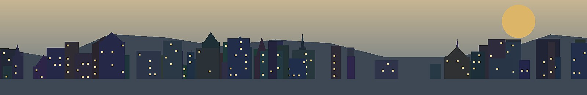

Micro Location Analyzer
Score the exact street, building surroundings and demand anchors behind a location thesis.
Location Demand
Decision inputs
Adjust the assumptions below. Results update immediately and are intentionally framed as a decision memo, not just a number.
Architecture note
This page uses the shared Investment Toolkit registry and calculation engine in assets/js/toolkit.js, so future tools can be added by registering inputs, a compute function and memo rules.